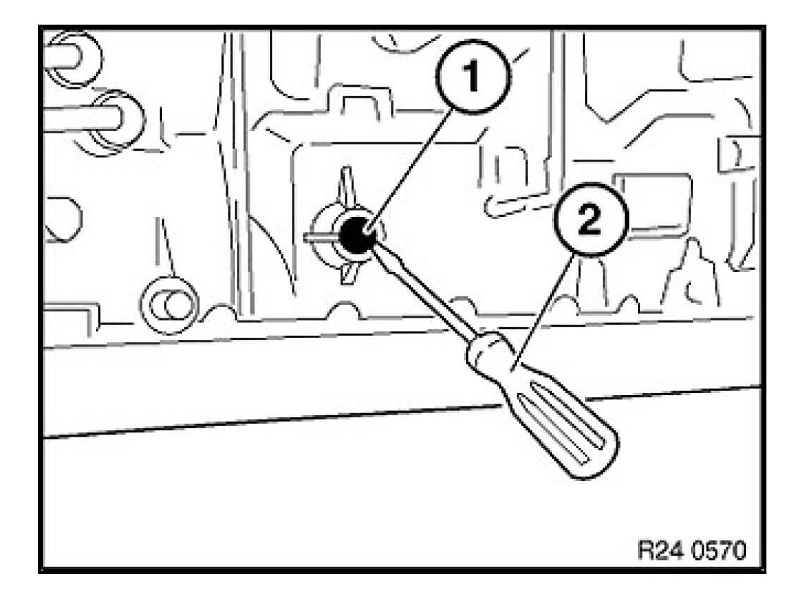
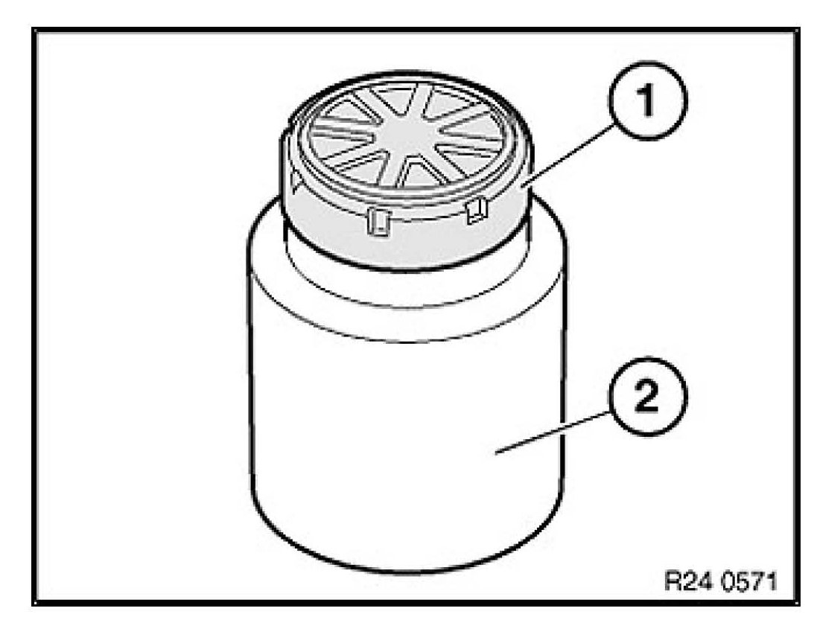
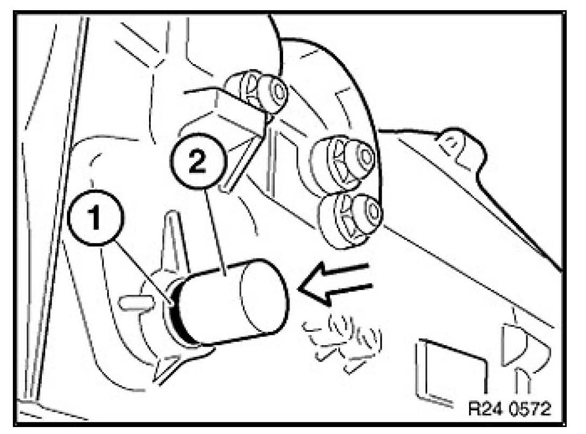
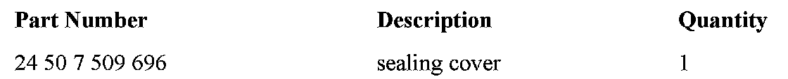

A/T - Leak From Selector Shaft Seal
SI B24 20 07Automatic Transmission
October 2007
Technical Service
SUBJECT
6L45R Transmission with AWD Leaks from the Selector Shaft Seal
MODEL
X3 with N52K engine and 6L45R transmission (GM6) produced from 8/2006
328xi with N51 or N52K engines and 6L45R transmission (GM6) produced from 8/2006
SITUATION
Transmission oil is leaking from the selector shaft sealing cover on the left hand side of the transmission. This can, at first glance, appear to be a leaking transmission pan gasket.
CAUSE
A leaking or displaced selector shaft sealing cover located on the left side of the GM6 transmission.
CORRECTION
Replace the sealing cover following the TIS repair instructions included in the 10/2007 TIS release.
Until this release is available, follow the E46 TIS repair instruction RA 24 50 001 - E46 AWD: Selector shaft sealing cap on left transmission side leaking, as described in the procedure below.
PROCEDURE
Note - to be able to remove and replace the sealing cover, it is necessary to first remove the front propeller shaft.

1. Lever out sealing cap (1) with a screwdriver (2).

2. Place new sealing cap (1) on drift (2).
Note:
Drift (2) for driving in sealing cap is contained in repair kit.

3. Drive in new sealing cap (1) with drift (2) as far as it will go.
4. Check / top off the automation transmission oil, as described in TIS repair instruction
RA 00 11 237 (GA6L45R), using only Dexron-VI automatic transmission fluid (temporarily available from BMW under P/N 83 22 0 397 114).

PARTS INFORMATION
WARRANTY INFORMATION
Covered under the terms of the BMW New Vehicle Limited Warranty.
Please refer to the latest KSD for all applicable labor operations and allowances.
If the appropriate labor operation is not contained in KSD, then a work time labor operation should be used.
Defect Code 24 00 50 48 00

Disclaimer